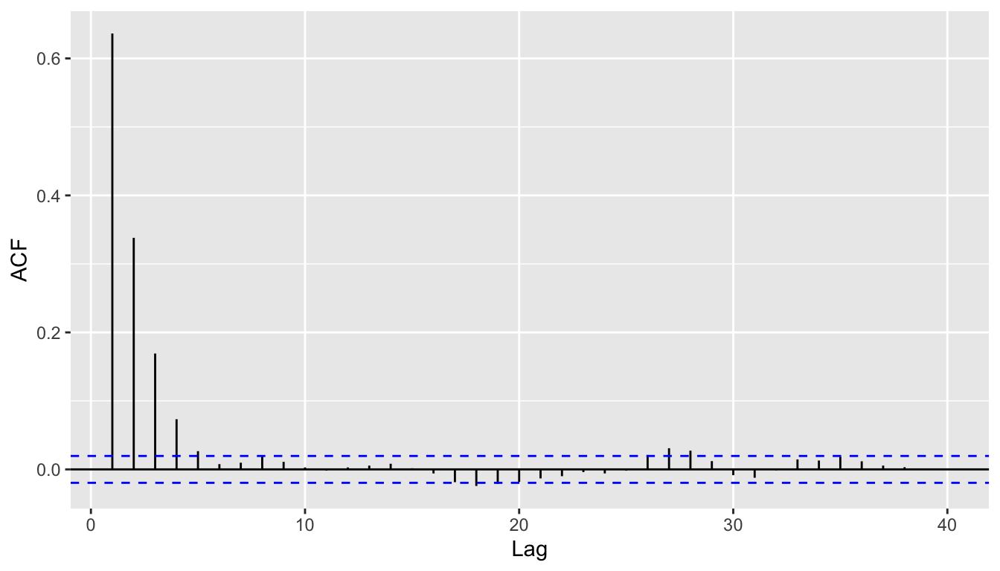
5 Les modèles ARMA
\[ \newcommand{\N}{\mathbb{N}} \newcommand{\Z}{\mathbb{Z}} \newcommand{\R}{\mathbb{R}} \newcommand{\E}{\mathbb{E}} \newcommand{\C}{\text{Cov}} \newcommand{\V}{\mathrm{Var}} \newcommand{\EL}{\text{EL}} \newcommand{\H}{\mathcal H} \]
Dans ce chapitre, nous allons nous intéresser aux modèles ARMA qui sont très couramment utilisés dans l’étude des séries temporelles. Ce sont des modèles paramétriques linéaires de séries temporelles proposés par Box et Jenkins. Leurs écriture et analyse utilisent abondamment les opérateurs retard \(B\) et avance \(F\). Aussi, nous allons débuter ce chapitre en étudiant quelques propriétés sur des polynômes ou séries “en \(B\)” que nous exploiterons ensuite dans le cadre des processus ARMA.
5.1 Polynomes et séries en B
5.1.1 Définitions
Soit \((X_t)_{t\in \Z}\) un processus stationnaire du second ordre. Rappelons que l’opérateur retard \(B\) est défini par \(BX_t=X_{t-1}\) et l’opérateur avance \(F\) par \(FX_t=X_{t+1}\). Par composition, on a alors que \(B^kX_t=X_{t-k}\) et \(F^kX_t=X_{t+k}\). Puis par extension, un polynôme en \(B\) (ou \(F\)) est défini par \[ \left(\sum_{i=1}^p a_iB^i\right)X_t=\sum_{i=1}^p a_iX_{t-i}. \]
On a déjà utilisé ce type d’opérateur pour définir les moyennes mobiles (voir Chapter 2). Nous avons également considéré la notion de série en \(B\) quand nous avons introduit la notion de filtrage linéaire (voir Chapter 4). Rappelons que nous avons vu que si \((X_t)_{t\in \Z}\) est un processus stationnaire, alors le processus \((Y_t)_{t\in \Z}\) défini par \[Y_t=\sum_{i\in \Z}a_iX_{t-i}\] est également stationnaire si \(\sum_{i\in \Z}|a_i|<+\infty\).
Definition 5.1 Soit \((a_i)_{i\in \Z}\) une famille absolument sommable de réels \(\left(\sum_{i\in \Z}|a_i|<+\infty\right)\).
On appelle série en \(B\) de coefficients \((a_i)_{i\in \Z}\) l’opérateur \[
P(B)=\sum_{i\in \Z}a_iB^i
\] sur les processus stationnaires qui transforme le processus stationnaire \((X_t)_{t\in \Z}\) en un processus stationnaire \((Y_t)_{t\in \Z}\) défini par , pour tout \(t\in \Z\), par \[
Y_t=P(B)X_t=\left(\sum_{i\in \Z}a_iB^i\right)X_t=\sum_{i\in \Z}a_iX_{t-i},\ \forall t\in\Z
\]
La manipulation des séries en \(B\) se fait comme celle des séries réelles, en particulier pour les combinaisons linéaires et composées de séries.
Proposition 5.1 On a les résultats suivants :
- La combinaison linéaire de deux séries en \(B\) est une série en \(B\).
- La composée de deux séries en \(B\) est une série en \(B\).
5.1.2 Inversion de \(I-\lambda B\)
Dans l’étude des modèles ARMA, on va avoir besoin de savoir quand et comment on peut inverser des polynômes en \(B\). On va donc ici commencer par le polynôme de degré 1 en \(B\) : \(I-\lambda B\).
L’opérateur \(P(B)=I-\lambda B\) associe à tout processus stationnaire \((X_t)_{t\in \Z}\) un nouveau processus stationnaire \((Y_t)_{t\in \Z}\) tel que \[ Y_t=(I-\lambda B)X_t=X_t-\lambda X_{t-1}. \] Se donnant un processus stationnaire \((Y_t)_{t\in \Z}\), le problème de l’inversion du polynôme \(I-\lambda B\) revient à déterminer s’il existe un processus stationnaire \((X_t)_{t\in \Z}\) vérifiant : \[ Y_t=(I-\lambda B)X_t=X_t-\lambda X_{t-1} \] et de donner son expression en fonction du processus \((Y_t)_{t\in \Z}\).
On va montrer dans la suite que ce polynôme \(P(B)=I-\lambda B\) est inversible seulement si \(|\lambda|\neq 1\) et on obtiendra dans ce cas l’expression de son inverse.
5.1.2.1 1er Cas : \(|\lambda|<1\)
- Une solution :
Soit la suite \((a_i)_{i\in \Z}\) définie par \(a_i=0\) pour \(i\in\mathbb Z \setminus \mathbb N\) et \(a_i=\lambda^i\) pour \(i\in \N\). On a alors \[ \sum_{i\in\Z}|a_i|=\sum_{i\in \N}|\lambda|^i<+\infty. \]
La série en \(B\) de coefficients \((a_i)_{i\in \Z}\) est donc bien définie et on peut écrire \[\begin{eqnarray*} (I-\lambda B)\left(\sum_{i\in \Z}a_iB^i\right) &=&(I-\lambda B)\left(\sum_{i\in\N}\lambda^iB^i\right)\\ &=&\sum_{i\in \N}\lambda^iB^i-\sum_{i\in \N}\lambda^{i+1}B^{i+1}=I. \end{eqnarray*}\]
Ainsi, pour un processus stationnaire \((Y_t)_{t\in \Z}\) donné, le processus \((X_t)_{t\in \Z}\) défini par \(X_t=\underset{i=0}{\stackrel{+\infty}{\sum}}\lambda^iY_{t-i}\) est solution de l’équation \[ Y_t=(I-\lambda B)X_t. \]
- Non unicité :
\((X_t)_{t\in\Z}\) avec \(X_t=\sum_{i=0}^{+\infty}\lambda^iY_{t-i}\) n’est pas l’unique solution. En effet, soit \((X^*_t)_{t\in \Z}\) tel que \((I-\lambda B)X_t^*=0\) et définissons le processus \((\tilde X_t)_{t\in \Z}\) par \(\tilde X_t=X_t+X_t^*\). Alors on a que \(Y_t=(I-\lambda B)\tilde X_t\).
Un processus \((X^*_t)_{t\in \Z}\) vérifiant \((I-\lambda B)X_t^* = X_t^*-\lambda X_{t-1}^*=0\) est de la forme \(X^*_t=\lambda^t A\), pour tout \(t\in\Z\), où \(A\) est une v.a.r. de \(L^2\). Ainsi, étant donné un processus \((Y_t)_{t\in \Z}\), les solutions de l’équation \(Y_t=(I-\lambda B)X_t,\ \forall t\in\Z\) sont de la forme \[ \tilde X_t=X_t+X_t^*=\sum_{i=0}^{+\infty}\lambda^iY_{t-i}+\lambda^t A,\ t\in\Z \]
Mais le processus \((X^*_t)_{t\in \Z}\) n’est pas stationnaire !
- Unique solution stationnaire :
Etant donné le processus \((Y_t)_{t\in \Z}\), la solution stationnaire de l’équation \(Y_t=(I-\lambda B)X_t\) est le processus \((X_t)_{t\in \Z}\) défini par \[ X_t=\sum_{i=0}^{+\infty}\lambda^iY_{t-i}. \]
Proposition 5.2 L’opérateur \((I-\lambda B)\) est inversible dans la classe des processus stationnaires d’inverse \(\underset{i=0}{\stackrel{+\infty}{\sum}}\lambda^iB^i\) quand \(|\lambda|<1\).
5.1.2.2 2ème Cas : \(|\lambda|>1\)
On peut écrire \[ I-\lambda B=-\lambda B\left(I-\frac{1}{\lambda}F\right) \] Comme \(|\frac 1 \lambda|<1\), par le même raisonnement que précédent, le polynôme \(\left(I-\frac{1}{\lambda}F\right)\) est inversible dans la classe des processus stationnaires d’inverse \(\sum_{i=0}^{+\infty}\lambda^{-i}F^i\). Le processus \(-\lambda B\) est inversible d’inverse \((-1/\lambda)F\).
Proposition 5.3 Quand \(|\lambda|>1\), l’e processus’opérateur \(I-\lambda B\) est inversible dans la classe des processus stationnaires d’inverse \[ \left(\frac{-1}{\lambda}F\right)\left(\sum_{i=0}^{+\infty}\frac{1}{\lambda^i}F^i\right) =-\sum_{i=0}^{+\infty}\frac{1}{\lambda^{i+1}}F^{i+1}=-\sum_{j=1}^{+\infty}\frac{1}{\lambda^j}F^j \]
Etant donné un processus stationnaire \((Y_t)_{t\in \Z}\), l’unique solution stationnaire de l’équation \(Y_t=(I-\lambda B)X_t\) est donc \((X_t)_{t\in \Z}\) défini par \[ X_t=-\sum_{j=1}^{+\infty}\frac{1}{\lambda^j}Y_{t+j}. \]
5.1.2.3 3ème Cas : \(|\lambda|=1\)
Proposition 5.4 Si \(|\lambda|=1\), l’opérateur \(I-\lambda B\) n’est pas inversible dans la classe des processus stationnaires.
5.1.3 Inverse d’un polynôme en \(B\)
On considère maintenant un polynôme en \(B\) de la forme \[ \Phi(B)=I-\varphi_1B-\varphi_2B^2-\cdots-\varphi_pB^p. \] et on répondre à la question suivante : \(\Phi(B)\) est-il inversible ? Se donnant un processus \((Y_t)_{t\in \Z}\), existe-t-il un unique processus stationnaire \((X_t)_{t\in \Z}\) tel que \[ \Phi(B)X_t=Y_t,\ \forall t\in\Z. \] Dans les complexes, le polynôme \(\Phi(z)\) a \(p\) racines non nécessairement distinctes. Comme il est non constant, ce polynome est scindé. On peut donc alors utiliser les résultats du polynôme \(I-\lambda B\). On a alors la discussion de cas suivante :
- Si au moins une des racines est de module 1, alors il n’existe pas de processus stationnaire \((X_t)_{t\in \Z}\) solution de l’équation \(\Phi(B)X_t=Y_t\).
- Si toutes les racines sont de module différent de 1, alors il existe une série en \(B\), notée \(\Psi(B)=\sum \psi_iB^i\), telle que :
- \(\Phi(B)\Psi(B)=I\)
- \((X_t)_{t\in \Z}\), solution de \(\Phi(B)X_t=Y_t\), est stationnaire.
- Si toutes les racines sont à l’extérieur du disque unité, alors l’inverse est une série en puissances positives de \(B\) uniquement \[ \Psi(B)=\sum_{i\in \N} \psi_iB^i \]
- Si toutes les racines sont à l’intérieur du disque unité, alors l’inverse est une série en puissances strictement positives de \(F\) uniquement \[ \Psi(B)=\sum_{i\in \N^*} \psi_iF^i \]
5.2 Processus AR
5.2.1 Définition
Dans cette partie, on se restreint à des processus centrés sans perte de généralités
Dans de nombreuses situations pratiques la valeur en un instant \(t\) d’une série temporelle peut s’écrire comme la somme d’une combinaison linéaire des valeurs précédentes de la série et d’un terme de bruit. Un tel modèle est connu sous le nom d’un processus AR (AutoRegressive).
Definition 5.2 (AR(p))
On dit qu’un processus stationnaire \((X_t)_{t\in \Z}\) admet une représentation auto-régressive d’ordre \(p\) (noté AR(p)) s’il vérifie l’équation récurrente : \[
X_t-\varphi_1X_{t-1}-\varphi_2X_{t-2}-\cdots-\varphi_pX_{t-p}=\varepsilon_t,
\] où \((\varepsilon_t)_{t\in \Z}\sim\text{WN}(0,\sigma^2)\) et \((\varphi_1,\ldots,\varphi_p)\in\mathbb R^p\) avec \(\varphi_p\neq0\).
Réécriture :
Un processus AR(p) vérifie l’équation : \(\Phi(B)X_t=\varepsilon_t,\ \forall t\in\Z\) avec le polynome en \(B\) \[
\Phi(B)=I-\varphi_1 B-\varphi_2 B^2-\cdots-\varphi_p B^p.
\]
Cette représentation est dite canonique si le bruit blanc \((\varepsilon_t)_{t\in \Z}\) est tel que \(\varepsilon_t\perp\mathcal H_{-\infty}^{t-1}(X)\) pour tout \(t\in\Z\).
5.2.2 Un exemple instructif : le processus AR(1)
On considère \((X_t)_{t\in \Z}\) un processus AR(1), vérifiant donc l’équation de récurrence \[ X_t-\varphi X_{t-1}=\varepsilon_t,\ \forall t\in\Z \] où \((\varepsilon_t)_{t\in \Z}\) est un bruit blanc \(\text{WN}(0,\sigma^2)\) et \(\varphi\neq 0\).
D’après l’étude précédente sur l’inversibilité de \(I-\varphi B\), trois cas se présentent suivant les valeurs du paramètre \(\varphi\).
5.2.2.1 Cas \(|\varphi|=1\)
On a vu précédemment que dans ce cas, il n’existe pas de processus stationnaire \((X_t)_{t\in \Z}\) vérifiant l’équation \((I-\varphi B)X_t=\varepsilon_t\). Il n’existe donc pas de processus AR(1) de paramètre 1 ou -1.
5.2.2.2 Cas \(|\varphi|<1\)
- Ecriture de \(X_t\) en fonction du bruit blanc :
Pour \(|\varphi|<1\), l’inversibilité de \(I-\varphi B\) est assurée dans la classe des processus stationnaires et \[ (I-\varphi B)^{-1}=\sum_{i=0}^{+\infty}\varphi^iB^i. \]
Ainsi le processus AR(1) pour \(|\varphi|<1\) s’écrit, en fonction du bruit blanc \((\varepsilon_t)_{t\in \Z}\), sous la forme : \[ X_t=\sum_{i=0}^{+\infty}\varphi^i\varepsilon_{t-i},\ \forall t\in\Z. \]
De cette écriture, on en déduit que \(X_t\in\mathcal H_{-\infty}^t(\varepsilon)\) et donc \(\mathcal H_{-\infty}^t(X)\subset \mathcal H_{-\infty}^t(\varepsilon)\) pour tout \(t\) dans \(\Z\). De plus, par propriété des bruits blancs \(\varepsilon_t\perp \mathcal H_{-\infty}^{t-1}(\varepsilon)\). Ainsi \(\varepsilon_t \perp \mathcal H_{-\infty}^{t-1}(X)\), donc cette représentation est canonique.
- Prévision linéaire optimale :
Ayant observé \(X_1,\ldots,X_n\), on prédit la valeur suivante de la série \(X_{n+1}\) par \[ \hat X_n(1)=\EL(X_{n+1}|\mathcal H_{-\infty}^n(X))=\EL(\varphi X_n +\varepsilon_{n+1}|\mathcal H_{-\infty}^n(X))=\varphi X_n \] car \(\varepsilon_{n+1}\perp\mathcal H_{-\infty}^n(X)\).
- Processus des innovations :
Dans ce cas, \[ X_{t}-\hat X_{t-1}(1)=X_{t}-\varphi X_{t-1} = \varepsilon_{t},\ \forall t\in\Z \] C’est donc le bruit blanc \((\varepsilon_t)_{t\in \Z}\) dans la représentation AR(1). On verra que ce résultat reste valable pour tout modèle AR de représentation canonique.
5.2.2.3 Cas \(|\varphi|>1\)
- Ecriture (non canonique) de \(X_t\) selon le bruit blanc :
D’après l’étude précédente, le polynôme \(I-\varphi B\) est inversible d’inverse \[ (I-\varphi B)^{-1}=-\sum_{i=1}^{+\infty}\frac{1}{\varphi^i}F^i \textrm{ d'où } X_t=-\sum_{i=1}^{+\infty}\frac{1}{\varphi^i}\varepsilon_{t+i}. \]
Cette représentation du processus AR(1) n’est pas canonique car
\[\begin{eqnarray*} \C(\varepsilon_t,X_{t-1})&=&\C\left(\varepsilon_t,-\sum_{i=1}^{+\infty}\frac{1}{\varphi^i}\varepsilon_{t-1+i}\right)\\ &=& -\frac{1}{\varphi}\V(\varepsilon_t)= -\frac{\sigma^2}{\varphi}\neq 0. \end{eqnarray*}\]- Prévision linéaire optimale :
Ayant observé \(X_1,\ldots,X_n\), on prédit la valeur suivante de la série \(X_{n+1}\) par \[\begin{eqnarray*} \hat X_n(1)&=&\EL(X_{n+1}|\mathcal H_{-\infty}^n(X))\\ &=&\EL(\varphi X_n +\varepsilon_{n+1}|\mathcal H_{-\infty}^n(X))\\ &=&\varphi X_n+\EL(\varepsilon_{n+1}|\mathcal H_{-\infty}^n(X)) \end{eqnarray*}\] le dernier terme n’ayant aucune raison d’être nul, puisque la représentation n’est pas canonique.
Processus des innovations : \[\begin{eqnarray*} X_{t+1}-\hat X_t(1) &=&\varphi X_t+\varepsilon_{t+1}-\varphi X_t-\EL(\varepsilon_{t+1}|\mathcal H_{-\infty}^t(X))\\ &=&\varepsilon_{t+1}-\EL(\varepsilon_{t+1}|\mathcal H_{-\infty}^t(X)) \end{eqnarray*}\] donc non confondus avec le bruit blanc utilisé dans la représentation (non canonique) du processus AR(1).
Vers une représentation canonique :
On va ici montrer que le processus AR(1) pour \(|\varphi|>1\) possède un autre représentation, qui est canonique. Pour cela, on utilise la formule reliant les densités spectrales de deux processus stationnaires dont l’un est le filtrage linéaire d’un autre : partant de \((I-\varphi B)X_t=\varepsilon_t\), on a \[ f_X(\omega)|1-\varphi e^{-i\omega}|^2=f_\varepsilon(\omega)=\frac{\sigma^2}{2\pi} \Longleftrightarrow f_X(\omega)=\frac{\sigma^2}{2\pi}\frac{1}{|1-\varphi e^{-i\omega}|^2}. \]
Soit le processus \((\eta_t)_{t\in \Z}\) défini par \(\eta_t=X_t-\frac{1}{\varphi}X_{t-1},\ \forall t \in \Z\). Alors \[\begin{eqnarray*} f_\eta(\omega)&=&\textcolor{magenta}{f_X(\omega)} \left|1-\frac{1}{\varphi} e^{-i\omega}\right|^2 =\textcolor{magenta}{\frac{\sigma^2}{2\pi}}\frac{|1-\frac{1}{\varphi} e^{-i\omega}|^2}{\textcolor{magenta}{|1-\varphi e^{-i\omega}|^2}}\\ &=&\frac{\sigma^2}{2\pi\varphi^2}\frac{|1-\frac{1}{\varphi} e^{-i\omega}|^2}{|\frac{1}{\varphi}- e^{-i\omega}|^2} = \frac{\sigma^2}{2\pi\varphi^2} \frac{|1-\frac{1}{\varphi} e^{-i\omega}|^2}{|\frac{1}{\varphi}e^{i\omega}-1|^2} =\frac{\sigma^2}{2\pi\varphi^2}. \end{eqnarray*}\]
On a donc une nouvelle représentation AR(1) pour le processus \((X_t)_{t\in \Z}\) : \[ (I-\frac{1}{\varphi} B)X_t=\eta_t \textrm{ où } (\eta_t)_{t\in \Z}\sim \text{WN}(0,\sigma^2/\varphi^2) \] et la représentation est canonique car \(|1/\varphi|<1\). On a aussi que le processus \((\eta_t)_{t\in \Z}\) correspond au processus des innovations.
Cette étude du cas particulier du processus AR(1) nous a donc permis de voir que la représentation AR(1) n’est pas unique. En choisissant celle avec le coefficient \(\varphi\) ou \(1/\varphi\) de module inférieur à 1, on a la représentation canonique. Ce résultat se généralise aux processus AR d’ordre quelconque.
5.2.3 Propriétés
La proposition suivante généralise les résultats vus sur la surjectivité et l’inversibilité du polynôme en \(I-\lambda B\) et décrit le processus AR en fonction du bruit blanc.
Proposition 5.5 Soit \((\varepsilon_t)_{t\in \Z}\) un bruit blanc et \(\Phi(B)\) un polynôme en \(B\).
- Il existe une infinité de processus du second ordre \((X_t)_{t\in \Z}\) vérifiant : \[ \Phi(B)X_t=\varepsilon_t, \text{ pour tout }t\in \Z. \]
- Si les racines du polynôme \(\Phi(B)\) sont toutes de module différent de 1, il existe une unique solution stationnaire \((X_t)_{t\in \Z}\). Elle s’écrit alors sous la forme d’un filtrage linéaire du bruit blanc \((\varepsilon_t)_{t\in \Z}\) : \[ X_t=\Psi(B)\varepsilon_t=\sum_{i\in\Z}\psi_i\varepsilon_{t-i},\ \forall t\in \Z. \]
- Si les racines du polynômes sont toutes à l’extérieur du disque unité, alors l’écriture moyenne mobile du processus AR(p) ne considère que les valeurs passées du bruit blanc : \[ X_t=\Psi(B)\varepsilon_t=\sum_{i\in\textcolor{red}{\N}}\psi_i\varepsilon_{t-i},\ \forall t\in \Z. \]
Comme vu dans le cas du processus AR(1), il n’existe pas qu’une seule représentation d’un processus AR(\(p\)). En revanche une seule de ces représentations est canonique.
Proposition 5.6 Soit \((\varepsilon_t)_{t\in \Z}\) un bruit blanc et \(\Phi(B)\) un polynôme en \(B\) de degré \(p\) exactement dont toutes les racines \((z_i = 1/ \lambda_i)_{i=1,\ldots,p}\) (non néc. distinctes) sont de module différent de 1.
Soit \((X_t)_{t\in \Z}\) l’unique processus stationnaire AR(p) vérifiant \[ \Phi(B)X_t=\varepsilon_t, \text{ pour tout }t\in \Z. \]
- Le processus \((X_t)_{t\in \Z}\) satisfait plusieurs représentations AR(p) différentes : soit \(\tilde \Phi(B)\) un nouveau polynôme en \(B\) ayant pour racines celles de \(\Phi(B)\) ou leurs inverses, le processus \((X_t)_{t\in \Z}\) admet aussi la représentation : \[ \tilde \Phi(B)X_t=\eta_t, \text{ pour tout }t\in \Z, \textrm{ où }(\eta_t)_{t\in \Z} \textrm{un bruit blanc}. \]
- Toutes les représentations ont même ordre.
- Une seule représentation est canonique : \[ \tilde \Phi(B)X_t=\eta_t,\ \forall t\in \Z, \] où \[ \tilde\Phi(B)=\prod_{i:|z_i|>1}\left(I-\lambda_iB\right)\prod_{i:|z_i|<1}\left(I-\frac{1}{\lambda_i}B\right). \]
Proposition 5.7 Si la représentation du processus AR(p) \[ \Phi(B)X_t=\varepsilon_t, \text{ pour tout }t\in \Z, \] est canonique, le bruit blanc \((\varepsilon_t)_{t\in \Z}\) utilisé dans sa représentation est aussi le processus des innovations.
Proposition 5.8 Tout processus AR(p) de représentation canonique \[ \Phi(B)X_t=\varepsilon_t, \text{ pour tout }t\in \Z, \] admet la représentation MA(\(\infty\)) : \[ X_t=\varepsilon_t +\sum_{i=1}^{+\infty} \psi_i\varepsilon_{t-i}. \]
5.2.4 Liaisons temporelles
Soit un processus \((X_t)_{t\in \Z}\) de représentation AR(\(p\)) canonique : \[ \Phi(B)X_t=\varepsilon_t,\ \forall t\in \Z. \]
Variance du processus \((X_t)_{t\in \Z}\) :
\[\begin{eqnarray*} \gamma_X(0)&=&\V(X_t)=\C\left(\sum_{i=1}^p\varphi_iX_{t-i}+\varepsilon_t,X_t\right)\\ &=&\sum_{i=1}^p\varphi_i \C(X_{t-i},X_t)+\C(\varepsilon_t,X_t)\\ &=&\sum_{i=1}^p\varphi_i \gamma_X(i)+\C\left(\varepsilon_t,\sum_{i=1}^p\varphi_iX_{t-i}+\varepsilon_t\right)\\ &=&\sum_{i=1}^p \varphi_i \underbrace{\gamma_X(i)}_{\gamma_X(0)\rho_X(i)}+\V(\varepsilon_t) \textrm{ (car canonique)}. \end{eqnarray*}\] où la dernière égalité est obtenue par orthogonalité du bruit blanc par rapport à l’histoire du processus AR(\(p\)) dans sa représentation canonique. On a alors \[ \gamma_X(0)=\frac{\sigma^2}{1-\sum_{i=1}^p\varphi_i\rho_X(i)}. \]Autocovariances : pour \(h>0\), \[\begin{eqnarray*} \gamma_X(h)=\C(X_t,X_{t+h})&=&\C\left(X_t,\sum_{i=1}^p\varphi_iX_{t+h-i}+\varepsilon_{t+h}\right)\\ &=&\sum_{i=1}^p\varphi_i \C(X_tX_{t+h-i})+\C(X_t,\varepsilon_{t+h})\\ &=&\sum_{i=1}^p\varphi_i \gamma_X(h-i) \text{ car }\varepsilon_{t+h}\perp \mathcal H_{-\infty}^{t+h-1}(X). \end{eqnarray*}\]
Autocorrélations : elles satisfont l’équation linéaire récurrente d’ordre \(p\) \[ \rho_X(h)=\sum_{i=1}^p\varphi_i \rho_X(h-i),\ \forall h\in \N^* \tag{5.1}\]
Les autocorrélations vérifient donc l’équation matricielle dite de :
\[\begin{eqnarray*} \left( \begin{array}{c} \rho_X(1) \\ \vdots \\ \rho_X(p) \end{array} \right)&=& \underbrace{\left( \begin{array}{cccc} 1 & \rho_X(1) & \cdots & \rho_X(p-1) \\ \rho_X(1) &1 & \ddots &\rho_X(p-2) \\ \vdots & \ddots & \ddots &\vdots\\ \rho_X(p-1) &\cdots&\rho_X(1)& 1 \end{array} \right)}_{R_X(p)} \left( \begin{array}{c} \varphi_1 \\ \vdots \\ \varphi_p \end{array} \right)\\ \\ \text{ et }\\ \gamma_X(0)&=&\frac{\sigma^2}{1-\underset{i=1}{\stackrel{p}{\sum}}\varphi_i\rho_X(i)}. \end{eqnarray*}\]Proposition 5.9 (Autocorrélations simples d’un AR(p))
Les autocorrélations simples d’un processus AR(p) décroissent, de manière exponentielle ou sinusoïdale amortie, vers 0.
Example 5.1 Pour un AR(1) d’équation canonique \(X_t=\varphi X_{t-1}+\varepsilon_t,\) on a \(\rho_X(h)=\varphi^{|h|}.\) On a bien la décroissance exponentielle des autocorrelations et on constate que le coefficient \(\varphi\) d’un AR(1) est en fait la première autocovariance.
Example 5.2 Soit le processus AR(2) défini par \(X_t = 0.7 X_{t-1}-0.1 X_{t-2}+\varepsilon_t\). Les racines du polynome \(\Phi(z)=0.1 z^2 -0.7 z +1\) sont \(2\) et \(5\). La Figure 5.1 montre la décroissante exponentielle des autocorrélations empiriques de ce processus.
Soit le processus AR(2) défini par \(X_t = \frac{3}{4} X_{t-1} - \frac{3}{16} X_{t-2}+\varepsilon_t\). Les racines du polynome \(\Phi(z)=\frac{3}{16} z^2 - \frac 3 4 z +1\) sont \(2\pm i 2\sqrt{3}/3\). La Figure 5.2 montre les autocorrélations empiriques de ce processus.
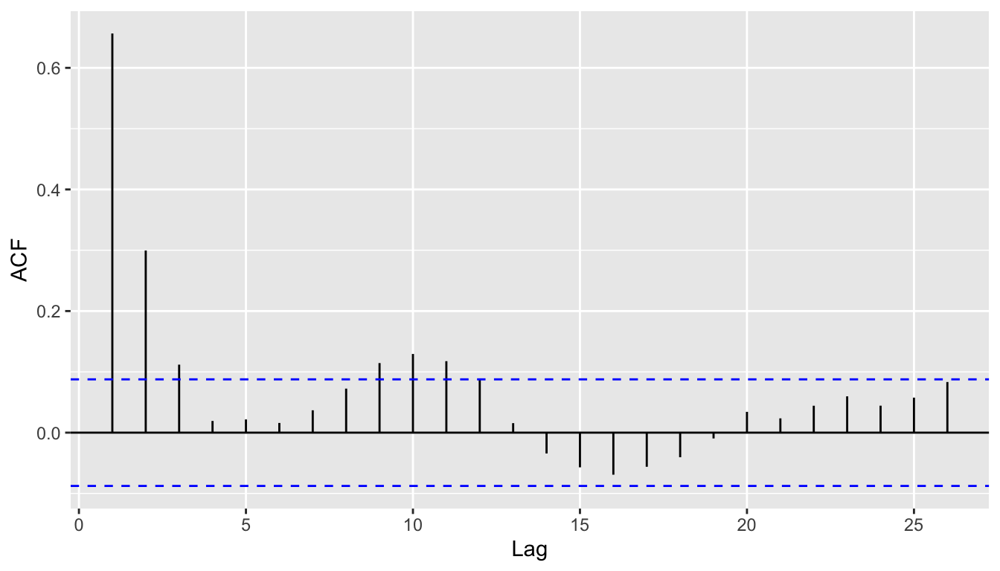
Proposition 5.10 Autocorrélations partielles d’un AR(p)
Les autocorrélations partielles d’un processus AR(p) sont nulles à partir du rang \(p+1\) :
- \(r_X(p)=\varphi_p\neq 0\)
- \(r_X(k)=0,\ \forall k>p\)
Example 5.3
Pour illustrer la propriété que les autocorrélations partielles d’un processus \(AR(p)\) sont nulles à partir du rang p+1, les autocorrélations partielles empiriques sont tracées en Figure 5.3 pour le processus \(X_t = 0.7 X_{t-1}-0.1 X_{t-2}+\varepsilon_t\) (à gauche - AR(2)) et le processus \(X_t = 0.7 X_{t-1}-0.1 X_{t-2}+0.2 X_{t-3}+\varepsilon_t\) (à droite - AR(3)).
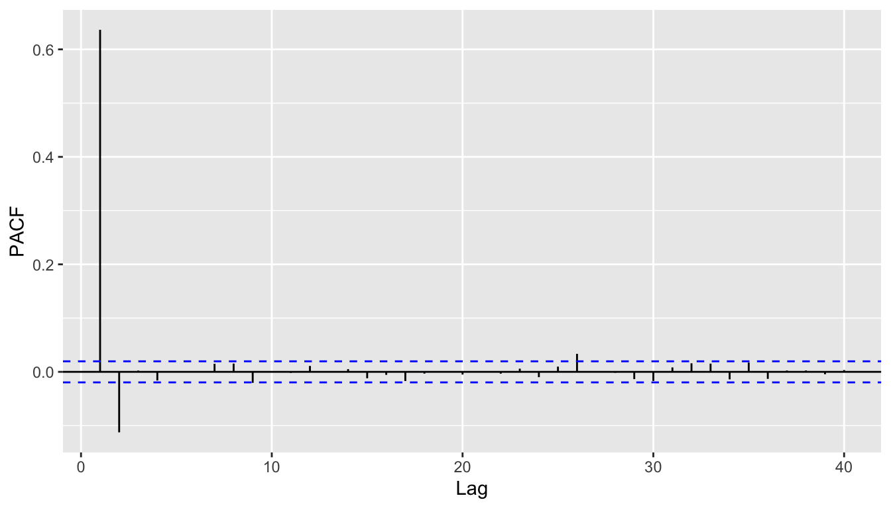
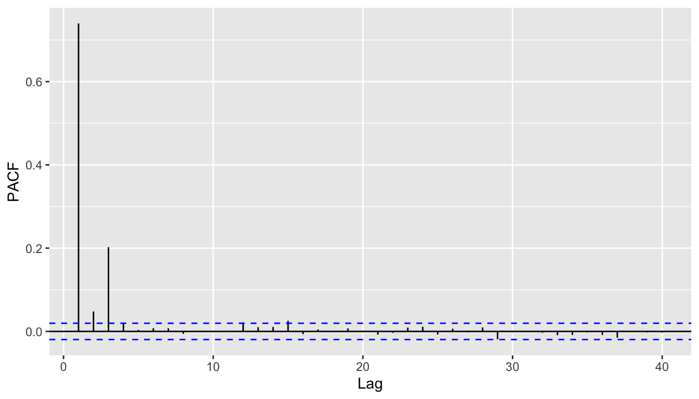
5.3 Processus MA
5.3.1 Définition
Definition 5.3 On dit qu’un processus stationnaire \((X_t)_{t\in \Z}\) admet une représentation en moyenne mobile d’ordre \(q\) (noté MA(q)) s’il vérifie l’équation \[ X_t=\varepsilon_t+\theta_1\varepsilon_{t-1}+\theta_2\varepsilon_{t-2}+\cdots+\theta_q\varepsilon_{t-q} \] où \((\varepsilon_t)_{t\in \Z}\sim\text{WN}(0,\sigma^2)\) et \((\theta_1,\ldots,\theta_q)\in\R^q\), \(\theta_q\neq0\).
Réécriture :
\(X_t=\Theta(B)\varepsilon\_t,\ \forall t\in\Z\) avec le polynôme en \(B\) \(\Theta(B)=I+\theta_1B+\theta_2B^2+\cdots+\theta_qB^q.\)
Cette représentation est dite canonique si les racines du polynôme \(\Theta(z)\) sont toutes à l’extérieur du disque unité.
5.3.2 Propriétés
Proposition 5.11 Soit \((\varepsilon_t)_{t\in \Z}\) un bruit blanc et \(\Theta(B)\) un polynôme en \(B\) de degré \(q\) exactement dont toutes les racines (non néc. distinctes) sont de module différent de 1.
Soit \((X_t)_{t\in \Z}\) un processus \(\text{MA}(q)\) vérifiant \(X_t=\Theta(B)\varepsilon_t, \forall t\in \Z.\)
- Le processus \((X_t)_{t\in \Z}\) satisfait plusieurs représentations MA(q) différentes : soit \(\tilde \Theta(B)\) un nouveau polynôme en \(B\) ayant pour racines celles de \(\Theta(B)\) ou leurs inverses, le processus \((X_t)_{t\in \Z}\) admet aussi la représentation : \[ X_t=\tilde \Theta(B)\eta_t,\ \forall t\in \Z, \textrm{ où }(\eta_t)_{t\in \Z} \textrm{un bruit blanc}. \]
- Une seule représentation est canonique. Elle est obtenue en prenant le polynome avec toutes les racines à l’extérieur du disque unité.
- Un processus \(\text{MA}\) est stationnaire quelque soit sa représentation car filtrage linéaire d’un bruit blanc.
- Un processus \(\text{MA}\) est toujours centré.
Proposition 5.12 Soit \((X_t)_{t\in \Z}\) un processus MA(q) de représentation canonique \[ X_t=\Theta(B)\varepsilon_t,\ \forall t\in\Z \textrm{ avec } (\varepsilon_t)_{t\in \Z}\sim\text{WN}(0,\sigma^2) \]
Alors le processus \((X_t)_{t\in \Z}\) possède une représentation AR(\(\infty\)) : \[ \varepsilon_t=\sum_{i=0}^{+\infty}\pi_iX_{t-i} \textrm{ avec }\pi_0=1 \]
Proposition 5.13 Soit \((X_t)_{t\in \Z}\) un processus MA(q) de représentation canonique \[ X_t=\Theta(B)\varepsilon_t,\ \forall t\in\Z \textrm{ avec } (\varepsilon_t)_{t\in \Z}\sim\text{WN}(0,\sigma^2) \] Alors le processus des innovations correspond au bruit blanc \((\varepsilon_t)_{t\in \Z}\) de sa représentation canonique.
5.3.3 Liaisons temporelles
On considère un processus \(MA(q)\) \[X_t=\Theta(B)\varepsilon_t,\ \forall t\in\Z\] avec \(\Theta(B)=I+\theta_1B+\theta_2B^2+\cdots+\theta_qB^q\) et \((\varepsilon_t)_{t\in\Z}\sim\text{WN}(0,\sigma^2)\).
- Variance du processus \((X_t)_{t\in\Z}\) :
Par la propriété d’orthogonalité d’un bruit blanc, on a
- Fonction d’autocovariance de \((X_t)_{t\in\Z}\) :
\[\begin{eqnarray*} \gamma_X(h)&=&\C(X_t,X_{t+h})\\ &=&\C\left(\varepsilon_t + \sum_{j=1}^q\theta_j\varepsilon_{t-j},\varepsilon_{t+h} + \sum_{i=1}^q\theta_i\varepsilon_{t+h-i}\right). \end{eqnarray*}\]
A partir de cette expression, on peut immédiatement remarquer que \(\gamma_X(h)=0\) pour \(h>q\).
Pour \(h=1\), \(\C(X_t,X_{t+1}) = \E\left[(\varepsilon_t + \sum_{j=1}^q\theta_j\varepsilon_{t-j})(\varepsilon_{t+1} + \sum_{i=1}^q\theta_i\varepsilon_{t+1-i})\right] =\sigma^2(\theta_1+\theta_1\theta_2+\cdots+\theta_{q-1}\theta_q)\).
Pour \(h=2\), \(\C(X_t,X_{t+2}) =\E\left[(\varepsilon_t + \sum_{j=1}^q\theta_j\varepsilon_{t-j})(\varepsilon_{t+2} + \sum_{j=1}^q\theta_j\varepsilon_{t+2-j})\right] =\sigma^2(\theta_2+\theta_1\theta_3+\cdots+\theta_{q-2}\theta_q)\).
On en déduit pour tout \(h\) dans \(\N^*\) : \[\begin{eqnarray*} \gamma_X(h)&=&\sigma^2(\theta_h+\theta_1\theta_{1+h}+\cdots+\theta_{q-h}\theta_q) =\sigma^2\left(\theta_h+\sum_{i=1}^{q-h}\theta_i\theta_{i+h}\right). \end{eqnarray*}\]
- Fonction d’autocorrélation de \((X_t)_{t\in\Z}\) :
Proposition 5.14 (Autocorrélations simples d’un MA(q))
- Les autocorrélations simples d’un processus MA(q) sont nulles à partir du rang \(q+1\) : \[\rho_X(q)\neq 0 \textrm{ et }\rho_X(h)=0,\ \forall h>q.\]
- La propriété d’autocorrélations simples nulles à partir d’un certain rang \(q+1\) est caractéristique d’un MA(\(q\))
On considère le processus MA(2) défini par \(X_t = \varepsilon_t - 0.7 \varepsilon_{t-1}+0.1 \varepsilon_{t-2}\). La Figure 5.4 représente les autocorrélations empiriques de ce processus. On a bien des autocorrélations proche de 0 à partir de \(h>2\).
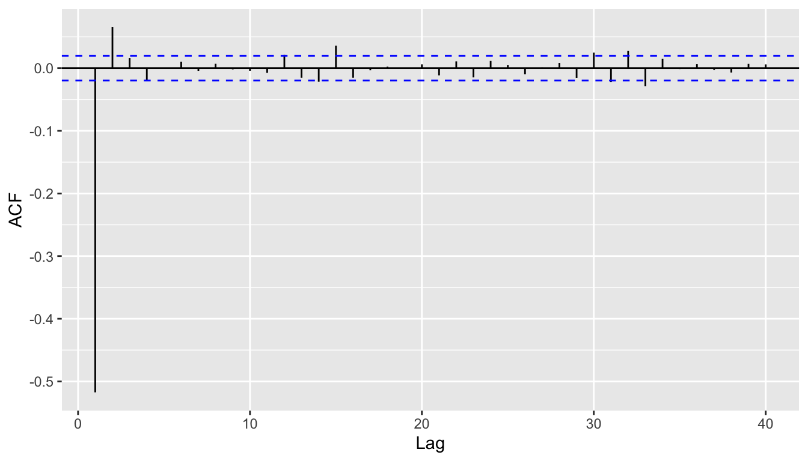
La Figure 5.5 représente les autocorrélations empiriques du processus défini par \(X_t = \varepsilon_t - 0.7 \varepsilon_{t-1}+0.1 \varepsilon_{t-2} -0.2 \varepsilon_{t-3}\). Les autocorrélations empiriques sont bien proche de 0 à partir de \(h>3\).
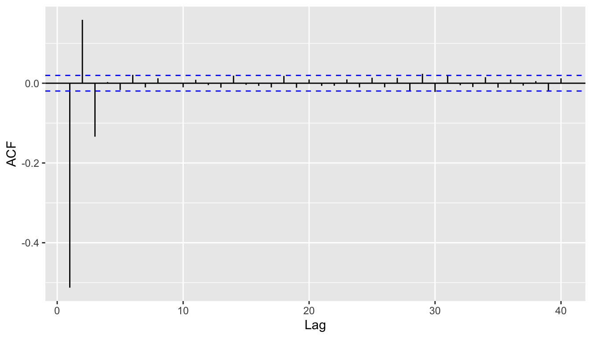
Proposition 5.15 (Autocorrélations partielles d’un MA(q))
Les autocorrélations partielles d’un processus MA(q) sont solutions d’une équation linéaire récurrente d’ordre \(q\). Elles décroissent, de manière exponentielle ou sinusoïdale amortie, vers 0.
Example 5.4
On reprend le processus MA(2) défini par \(X_t = \varepsilon_t - 0.7 \varepsilon_{t-1}+0.1 \varepsilon_{t-2}\). Les racines du polynome \(\Theta(z)\) associé sont 2 et 5. La Figure 5.6 représente les autocorrélations partielles empiriques.
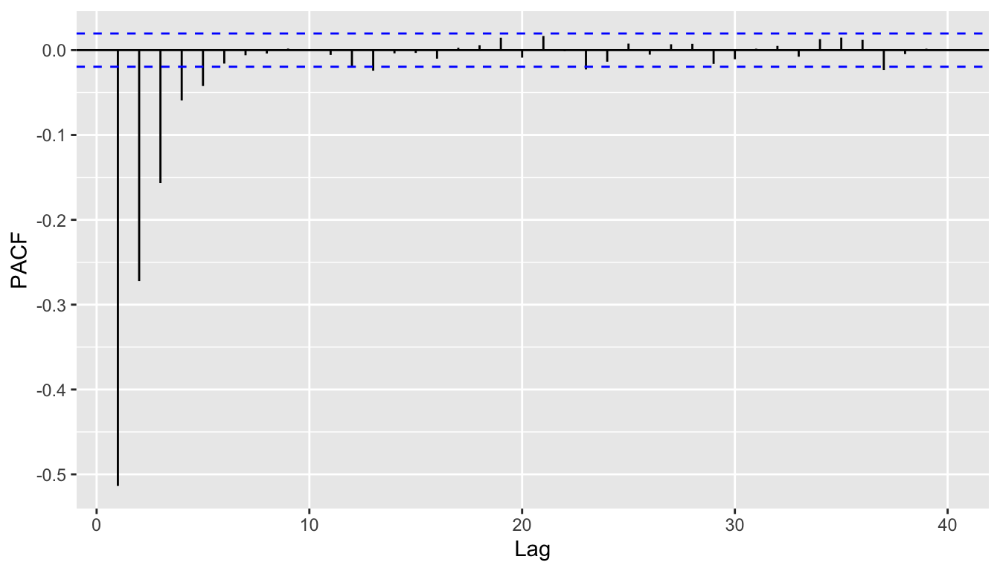
La Figure 5.7 représente les autocorrélations partielles empirique du processus MA(2) défini par MA(2) \(X_t = \varepsilon_t + 0.4 \varepsilon_{t-1} - 0.45 \varepsilon_{t-2}\), où les racines du polynome \(\Theta(z)\) associé sont \(2\pm i 2\sqrt{3}/3\).
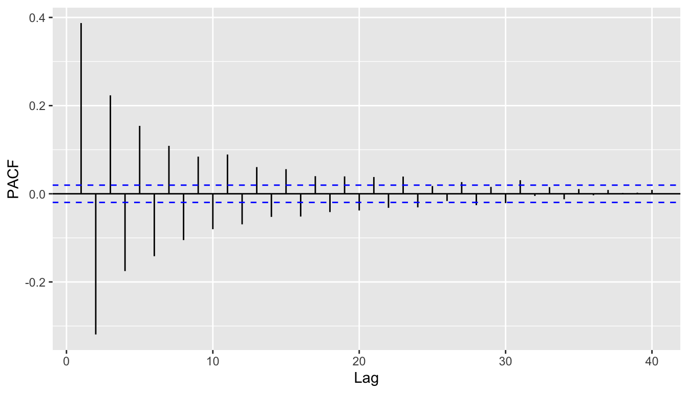
5.4 Processus ARMA
Nous allons maintenant étudier des processus stationnaires avec une partie AR et une partie MA. On les appelle processus ARMA pour AutoRegressive Moving Average. Ils sont très importants en pratique car on peut montrer que tout processus stationnaire peut être approché par un processus ARMA.
5.4.1 Définition
Definition 5.4 On dit qu’un processus stationnaire \((X_t)_{t\in \Z}\) admet une représentation ARMA\((p,q)\) s’il vérifie l’équation \[ X_t=\textcolor{red}{\underset{j=1}{\stackrel{p}{\sum}} \varphi_j X_{t-j}} + \textcolor{blue}{\varepsilon_t +\underset{i=1}{\stackrel{q}{\sum}} \theta_i\varepsilon_{t-i}} \] avec
- \((\varepsilon_t)_{t\in \Z}\sim\text{WN}(0,\sigma^2)\)
- \((\varphi_1,\ldots, \varphi_p)\in\R^p,\ \varphi_p\neq0\)
- \((\theta_1,\ldots,\theta_q)\in\R^{q},\ \theta_q\neq 0\)
Réécriture :
En utilisant les polynômes en \(B\) \[\begin{eqnarray*} \Phi(B)&=&I-\varphi_1B-\varphi_2B^2-\cdots-\varphi_pB^p\\
\text{ et }\Theta(B)&=&I+\theta_1B+\theta_2B^2+\cdots+\theta_qB^q,
\end{eqnarray*}\] un processus ARMA(p,q) vérifie l’équation : \[
\textcolor{red}{\Phi(B)X_t}=\textcolor{blue}{\Theta(B)\varepsilon_t},\ \forall t\in\Z.
\]
Definition 5.5 La représentation d’un processus ARMA\((p,q)\) \(\Phi(B)X_t=\Theta(B)\varepsilon_t\) est dite
- minimale si les polynômes \(\Phi(z)\) et \(\Theta(z)\) n’ont pas de racine commune
- causale si le polynôme \(\Phi(z)\) a toutes ses racines à l’extérieur du disque unité
- inversible si le polynôme \(\Theta(z)\) a toutes ses racines à l’extérieur du disque unité
- canonique si elle est causale et inversible.
5.4.2 Ecritures MA(\(\infty\)) et AR(\(\infty\))
Proposition 5.16 (Ecriture MA(\(\infty\))) Soit \((X_t)_{t\in \Z}\) un processus ARMA(p,q) de représentation minimale et causale. Il admet alors la représentation MA(\(\infty\)) \[ X_t=\Phi^{-1}(B)\Theta(B)\varepsilon_t=\varepsilon_t+\sum_{i=1}^{+\infty}\psi_i\varepsilon_{t-i}, \] où les coefficients \((\psi_i)_{i\in N}\) forment une famille absolument sommable et vérifient l’équation de récurrence linéaire : \[ \psi_i-\sum_{j=1}^p\varphi_j\psi_{i-j}=\theta_i,\ \forall i\in \N, \] avec \(\psi_i=0\) pour \(i<0\), \(\psi_0=1\), \(\theta_0=1\) et \(\theta_i=0\) pour \(i>q\).
Proposition 5.17 (Ecriture AR(\(\infty\))) Soit \((X_t)_{t\in \Z}\) un processus ARMA(p,q) de représentation minimale et inversible. Il admet alors la représentation AR(\(\infty\)) \[ \varepsilon_t=\Theta^{-1}(B)\Phi(B)X_t=X_t+\sum_{i=1}^{+\infty}\pi_iX_{t-i}, \] où les coefficients \((\pi_i)_{i\in N}\) forment une famille absolument sommable et vérifient l’équation de récurrence linéaire : \[ \pi_i+\sum_{j=1}^q\theta_j\pi_{i-j}=-\varphi_i,\ \forall i\in \N, \] avec \(\pi_i=0\) pour \(i<0\), \(\varphi_0=-1\) et \(\varphi_i=0\) pour \(i>p\).
5.4.3 Liaisons temporelles
On considère un processus \((X_t)_{t\in\Z}\) qui est un ARMA(\(p,q\)) d’équation \[X_{t}-\underset{j=1}{\stackrel{p}{\sum}}\varphi_jX_{t-j}=\varepsilon_{t} +\underset{i=1}{\stackrel{q}{\sum}}\theta_i\varepsilon_{t-i}.\]
- Fonction d’autocorrélation à partir de l’écriture ARMA(\(p,q\)) :
On considère \(X_{t+h}-\underset{j=1}{\stackrel{p}{\sum}}\varphi_jX_{t+h-j}=\varepsilon_{t+h} +\underset{i=1}{\stackrel{q}{\sum}}\theta_i\varepsilon_{t+h-i}\) et on prend la covariance avec \(X_t\) ce qui donne \[\begin{eqnarray*} \gamma_X(h)-\underset{j=1}{\stackrel{p}{\sum}}\varphi_j\gamma_X(h-j) &=& \C\left(\varepsilon_{t+h} +\underset{i=1}{\stackrel{q}{\sum}}\theta_i\varepsilon_{t+h-i},X_t\right)\\ &=& \C\left(\varepsilon_{t+h} +\underset{i=1}{\stackrel{q}{\sum}}\theta_i\varepsilon_{t+h-i},\varepsilon_t+\sum_{i=1}^{+\infty}\psi_i\varepsilon_{t-i}\right). \end{eqnarray*}\]
On a ausi que pour \(h>q\), \(\gamma_X(h)-\underset{j=1}{\stackrel{p}{\sum}}\varphi_j\gamma_X(h-j)=0.\)
Pour \(0\leq h\leq q\), on obtient \[
\gamma_X(h)-\underset{j=1}{\stackrel{p}{\sum}}\varphi_j\gamma_X(h-j)=\sigma^2\left(\sum_{i=0}^{q-h}\theta_{h+i}\psi_i{}\right)\textrm{ avec } \psi_0=1
\]
- Fonction d’autocorrélation avec l’écriture MA(\(\infty\)) :
En utilisant l’écriture MA(\(\infty\)) du processus \((X_t)_{t\in \Z}\) on obtient cette fois-ci \[ \gamma_X(h)=\C\left( \varepsilon_t+\sum_{i=1}^{+\infty}\psi_i\varepsilon_{t-i},\varepsilon_{t+h}+\sum_{i=1}^{+\infty}\psi_i\varepsilon_{t+h-i}\right)=\sigma^2\sum_{i=0}^{+\infty} \psi_i\psi_{i+h}. \]
5.5 Vers les processus ARIMA/ SARIMA
5.5.1 ARIMA
Dans la pratique, les processus sont rarement stationnaires. Les modèles ARIMA (AutoRegressive Integrated Moving Average) sont une extension des processus ARMA aux processus non stationnaires. Ils sont basés sur l’idée générale suivante essentiellement conçue pour les processus non stationnaires à tendance polynomiale : on peut différencier suffisamment le processus initial afin d’obtenir un processus sans tendance et appliquer un modèle ARMA sur le processus différencié.
Definition 5.6 On dit qu’un processus \((X_t)_{t\in \Z}\) admet une représentation [ARIMA\((p,d,q)\)]]{style=“color:blue;”} (\(p,d,q\in\mathbb N\)) s’il vérifie l’équation : \[ \Phi(B)(I-B)^dX_t= c + \Theta(B)\varepsilon_t,\ \forall t\in\Z \] où \[\begin{eqnarray*} & & c\in\mathbb{R}\\ & & \Phi(B)=I-\varphi_1B-\varphi_2B^2-\cdots-\varphi_pB^p,\ (\varphi_1,\ldots, \varphi_p)\in\R^p,\ \varphi_p\neq0\\ & & \Theta(B)= I+\theta_1B+\theta_2B^2+\cdots+\theta_qB^q,\ (\theta_1,\ldots,\theta_q)\in\R^q,\ \ \ \theta_q\neq 0\\ & & (\varepsilon_t)_{t\in \Z}\sim\text{WN}(0,\sigma^2) \end{eqnarray*}\]
Par rapport aux caractéristiques évoquées précédemment (voir ?sec-liaisonsAR et ?sec-liaisonsMA) sur les autocorrélations et autocorrélations partielles pour les processus AR et MA (voir ?sec-liaisonsAR et ?sec-liaisonsMA), on a le résultat suivant.
Proposition 5.18
Si la série temporelle suit un ARIMA(p,d,0) alors l’ACF et le PACF sur les données différenciées vérifient
- l’ACF décroit exponentiellement ou sinusoidal
- Un pic significatif au lag \(p\) sur le PACF et pas après le lag \(p\)
Si la série temporelle suit un ARIMA(0, d, q) alors l’ ACF et le PACF sur les données différenciées vérifient :
- le PACF est décroissant exponentiellement ou sinusoidal
- Un pic significatif au lag \(q\) pour l’ACF et pas après le lag \(q\)
Example 5.5 Pour illustrer la Proposition 5.18, la Figure 5.8 montre les autocorrélations et autocorrélations partielles empiriques pour les mesures différenciées une fois du processus \[ (I-0.1 B -0.2 B^2 - 0.6 B^3)(I-B) X_t = \varepsilon_t,\ (\varepsilon_t)_{t\in\Z}\sim \text{WN}(0,1) \]
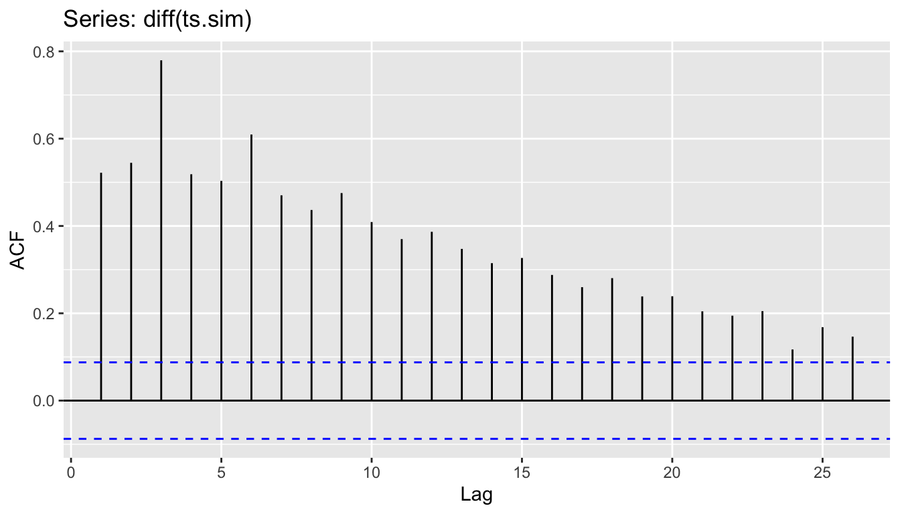
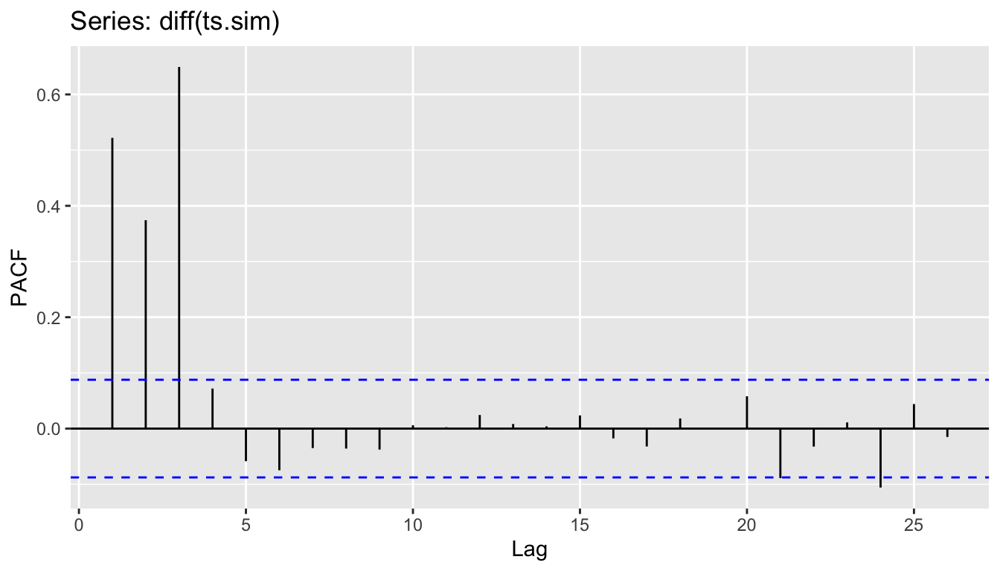
Pour illustrer la Proposition 5.18, la Figure 5.9 montre les autocorrélations et autocorrélations partielles empiriques pour les mesures différenciées une fois du processus \[ (I-B) X_t = (I-0.6 B -0.6 B^2 - 0.2 B^3)\varepsilon_t,\ (\varepsilon_t)_{t\in\Z}\sim \text{WN}(0,1) \]
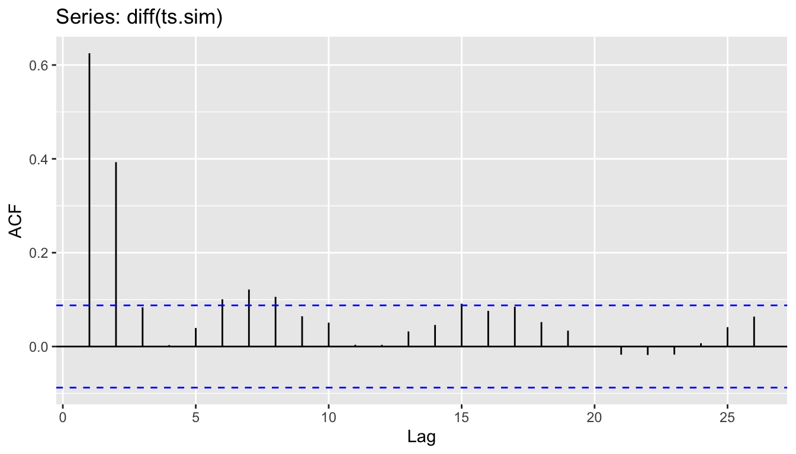
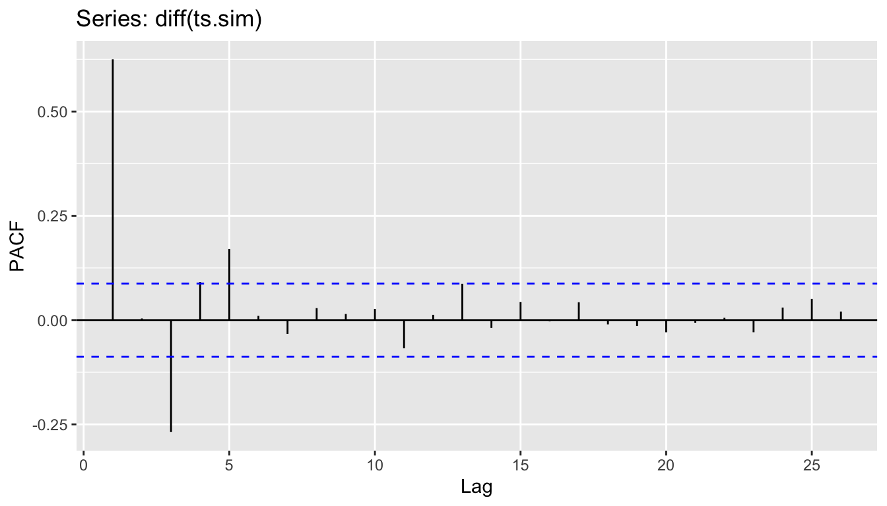
5.5.2 Sélection de modèle
Quand on étudie une série temporelle, on peut être amené à hésiter entre plusieurs modèles pour la modéliser au mieux. Supposons que l’on considère une collection de modèles ARIMA \(\mathcal M = \left\{\texttt{mod}_1,\ldots,\texttt{mod}_K\right\}\). On est dans le cadre classique d’un problème de sélection de modèles. On traite donc ce problème par les étapes suivantes :
Ajustement de chaque modèle \(\texttt{mod}_k\): Pour chaque modèle fixé, on estime les paramètres (par maximum de vraisemblance le plus souvent)
On minimise un critère pénalisé pour choisir le meilleur modèle. Par exemple,
le critère AIC : \(\mbox{AIC}(\texttt{mod}_k) = -2 \mbox{ log. vrais.} + 2 (p+q+1+\mathbb{1}_{c\neq 0})\)
le critère AIC corrigé : \(\mbox{AICc}(\texttt{mod}_k) = \mbox{AIC}(\texttt{mod}_k) + \frac{2 (p+q+1+\mathbb{1}_{c\neq 0})(p+q+2+\mathbb{1}_{c\neq 0})}{n-p-q-2-\mathbb{1}_{c\neq 0}}\)
le critère BIC : \(\mbox{BIC}(\texttt{mod}_k) = -2 \mbox{ log. vrais.} + (p+q+1+\mathbb{1}_{c\neq 0}) \log(n)\)
Example 5.6 Pour illustrer la sélection de modèle, on a ici simulées une série temporelle selon le modèle ARIMA(1,1,2) suivant
\[ (I-0.8 B)(I-B) X_t = (I-0.3B+0.6 B^2)\varepsilon_t,\ \ (\varepsilon_t)_t\sim \text{WN}(0,1.5) \]
En Figure 5.10, on trace la série temporelle étudiée \((X_t)_{t\in\Z}\) ainsi que les autocorrélations et autocorrélations partielles empiriques de \(((I-B)X_t)_{t\in\Z}\).
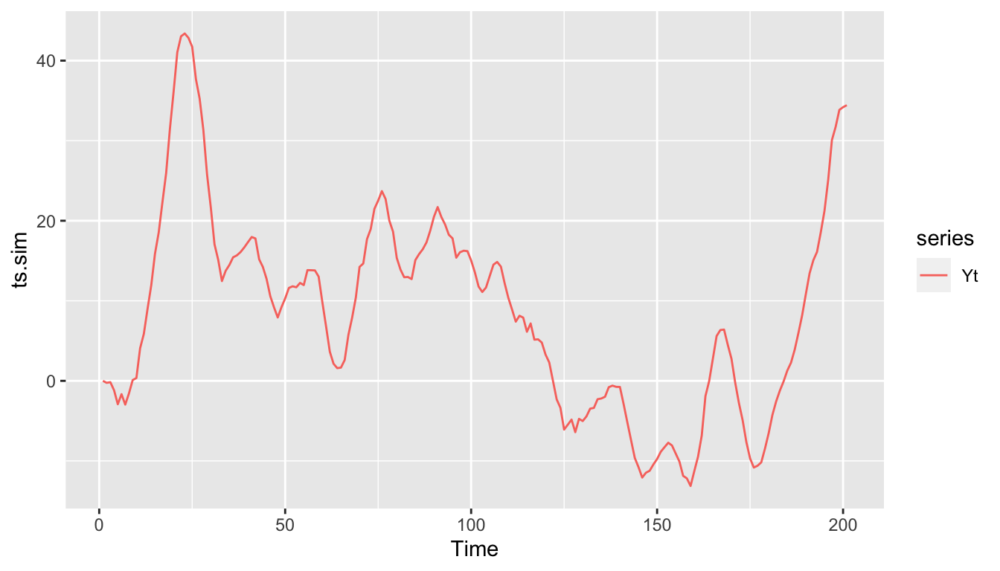
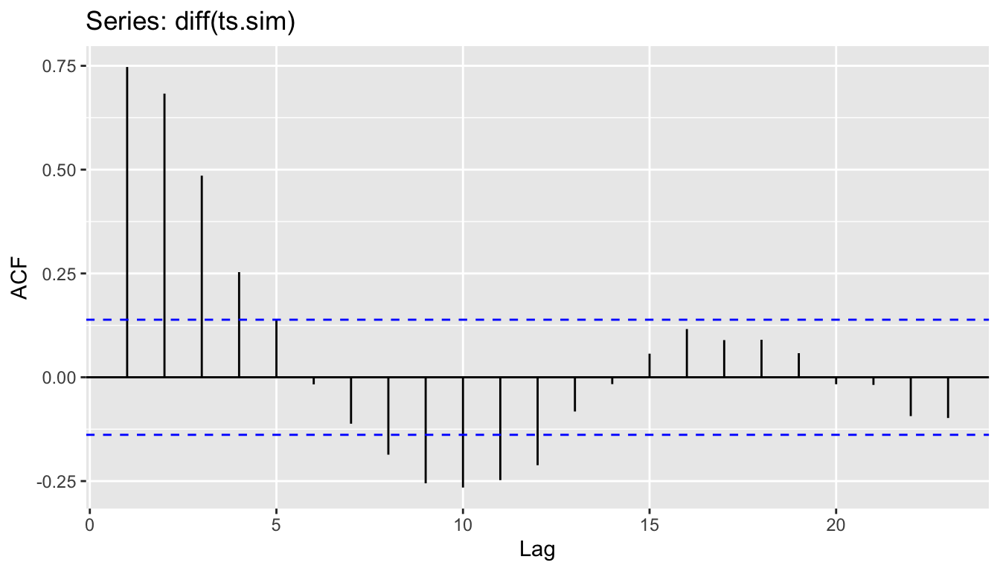
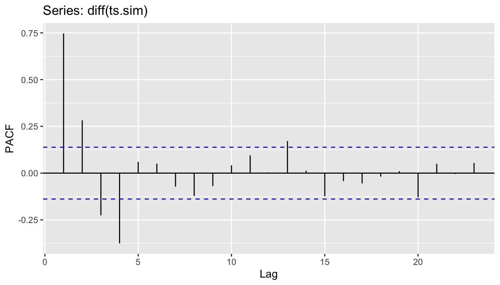
On considère la collection de modèles suivante \(\mathcal M = \{ARIMA(p,1,q),\ p\in\{1,2,3,4\},\ q\in\{0,1,2\}\}\). On calcule les différents critères évoqués précédemment. Au vu des résultats ci-dessous, les trois critères sélectionnent un modèle ARIMA(1,1,2).
mod AIC AICc BIC
1 ARIMA(1,1,0) 677.50 677.56 684.09
2 ARIMA(2,1,0) 662.93 663.05 672.83
3 ARIMA(3,1,0) 654.65 654.85 667.84
4 ARIMA(4,1,0) 626.42 626.73 642.91
5 ARIMA(1,1,1) 670.44 670.57 680.34
6 ARIMA(2,1,1) 662.15 662.36 675.34
7 ARIMA(3,1,1) 641.34 641.64 657.83
8 ARIMA(4,1,1) 627.87 628.30 647.66
9 ARIMA(1,1,2) 628.95 629.16 642.15
10 ARIMA(2,1,2) 630.34 630.65 646.83
11 ARIMA(3,1,2) 632.20 632.63 651.99
12 ARIMA(4,1,2) 628.39 628.97 651.485.5.3 SARIMA
Les modèles SARIMA, pour Seasonal ARIMA, sont une extension des modèles ARIMA à des séries temporelles présentant une saisonnalité.
Definition 5.7 On dit qu’un processus \((X_t)_{t\in \Z}\) admet une représentation SARIMA\((p,d,q)(P,D,Q)[s]\) s’il vérifie l’équation : \[ \textcolor{red}{(I-B^s)^D\Phi_P(B^s)}\textcolor{blue}{\Phi_p(B)(I-B)^d}\ X_t=c + \textcolor{blue}{\Theta_q(B)}\textcolor{red}{\Theta_Q(B^s)}\varepsilon_t,\ \forall t\in\Z \] où \[\begin{eqnarray*} & & c\in\mathbb{R}\\ & & \Phi_p(B)=I-\varphi_1B-\varphi_2B^2-\cdots-\varphi_pB^p,\ (\varphi_1,\ldots, \varphi_p)\in\R^p,\ \varphi_p\neq0\\ & & \Phi_P(B^s)=I-\phi_1B^s-\phi_2(B^s)^2-\cdots-\phi_P(B^s)^P,\ (\phi_1,\ldots, \phi_P)\in\R^P,\ \phi_P\neq 0\\ & & \Theta_q(B)= I+\theta_1B+\theta_2B^2+\cdots+\theta_qB^q,\ (\theta_1,\ldots,\theta_q)\in\R^q,\ \ \ \theta_q\neq 0\\ & & \Theta_Q(B^s)= I+\vartheta_1(B^s)+\vartheta_2(B^s)^2+\cdots+\vartheta_Q(B^s)^Q,\ (\vartheta_1,\ldots,\vartheta_Q)\in\R^Q,\ \ \ \vartheta_Q\neq 0\\ & & (\varepsilon_t)_{t\in \Z}\sim\text{WN}(0,\sigma^2) \end{eqnarray*}\]
En pratique, voici comment on peut procéder pour “identifier” les différents ordres :
Choix de \(d\), \(D\) et \(s\) :
- Allure de la série pour détecter la non-stationnarité et la saisonnalité \(s\)
- Différencier la série successivement jusqu’à stationnarité (\(d=1,2\) et \(D=0,1\) suffisent souvent)
Choix de \(p\), \(q\) (\(P\) et \(Q\) idem sur les lags \(k\times s\)) : A partir de ACF et pACF sur la série différenciée
- Cassure de l’ACF au lag \(q\) -> MA(q)
- Cassure pACF au lag \(p\) -> AR(p)
- Aucune cassure -> ARMA
- Décroissance très lente ou inexistante, il faut peut être encore différencier (mais avec parcimonie)
Example 5.7 Dans cet exemple, on simule une série temporelle selon un modèle SARIMA(0,1,1)(0,1,1)[12] \[ (I-B^{12})(I-B) X_t = (I+0.8 B)(I+0.4 B^{12})\varepsilon_t \]
La série est représentée en Figure 5.11.
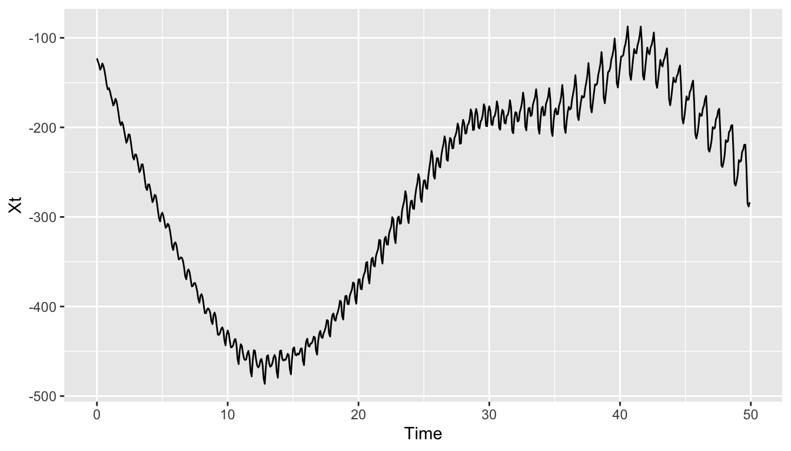
La Figure 5.12 permet de partir sur une saisonnalité par mois pour la série temporelle \((s=12)\).
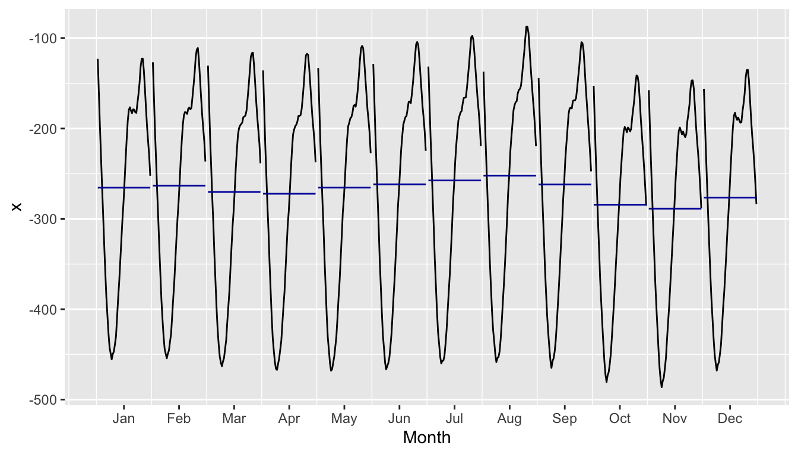
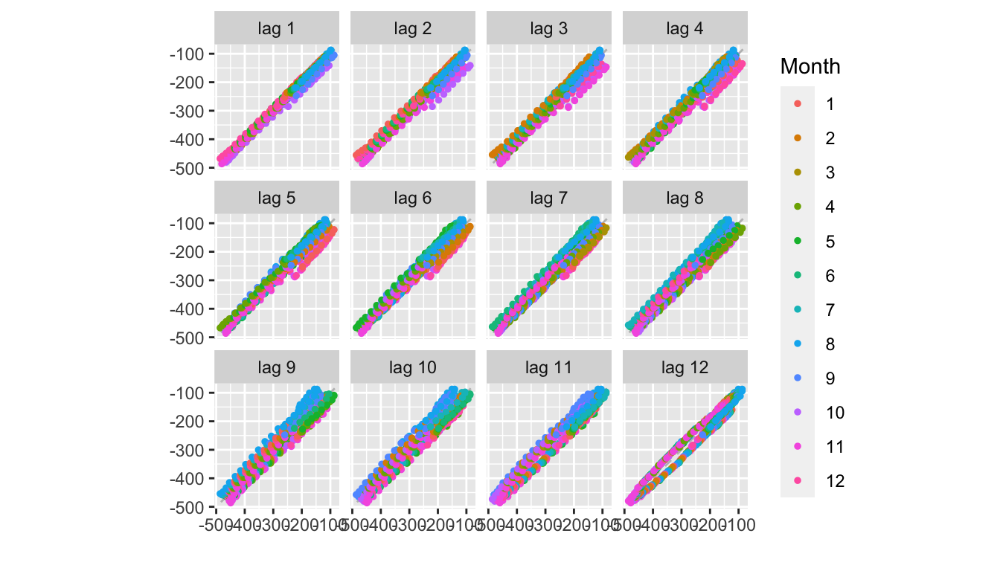
On trace ensuite les autocorrélations et autocorrélations empiriques pour la série \((X_t)\) (voir Figure 5.13)).
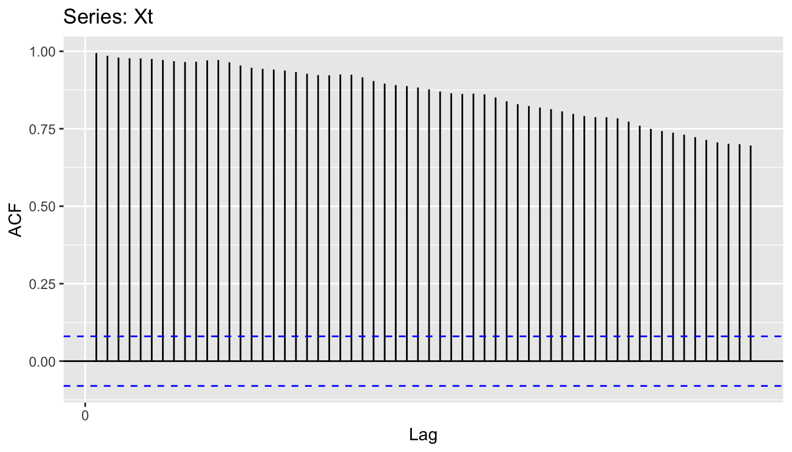
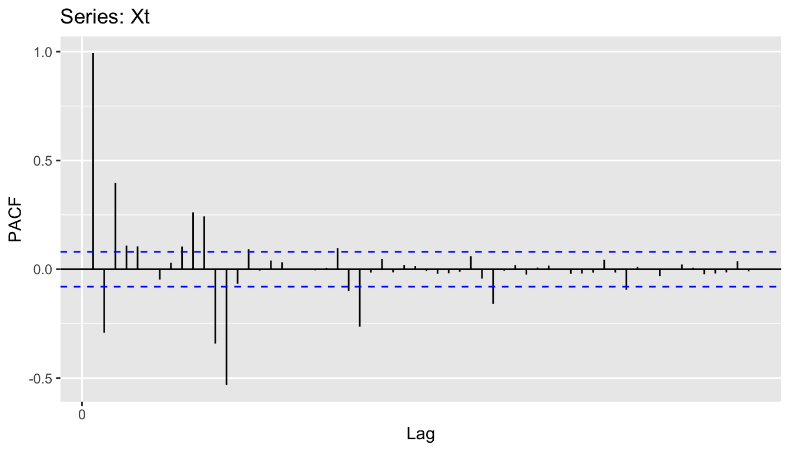
La Figure 5.14 (resp. Figure 5.15) représente la série temporelle différentiée \((I-B)X_t\) (resp. \((I-B^{12})X_t\))
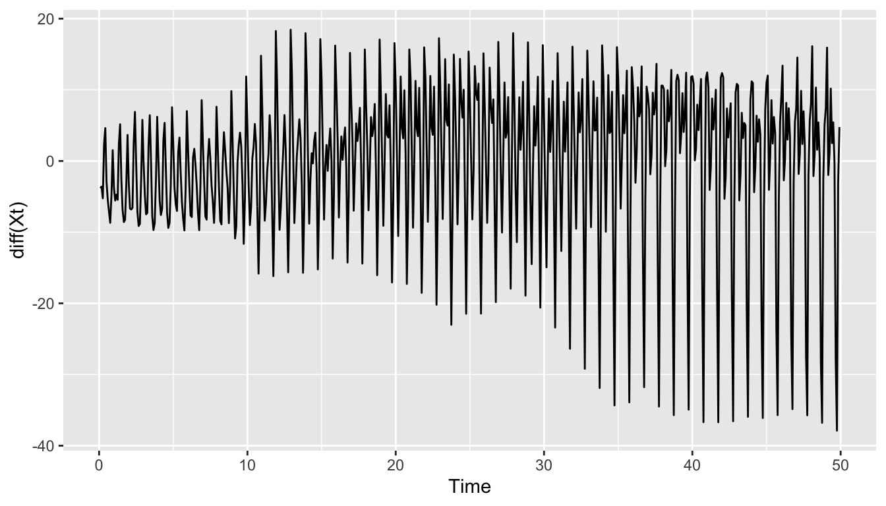
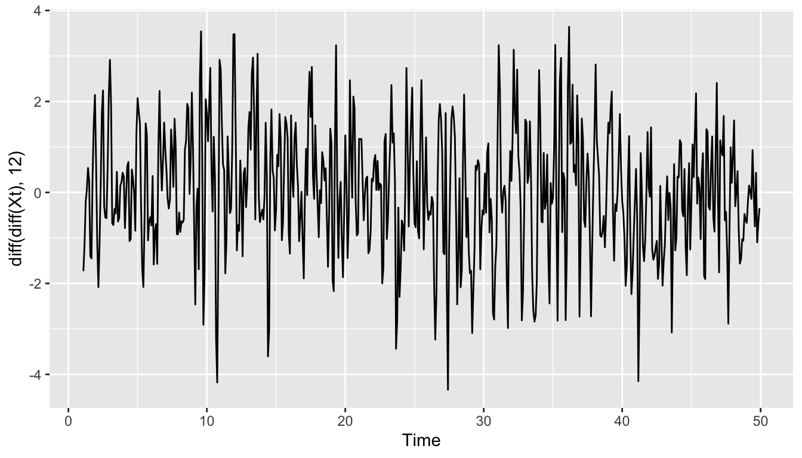
On trace ensuite en Figure 5.16, les autocorrélations et autocorrélations partielles empiriques de la série \[ Y_t = (I-B^{12})(I-B) X_t \]
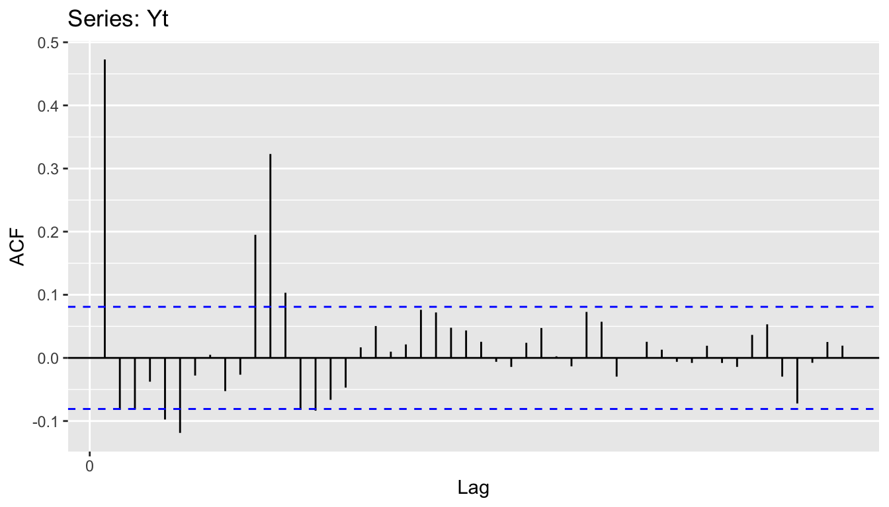
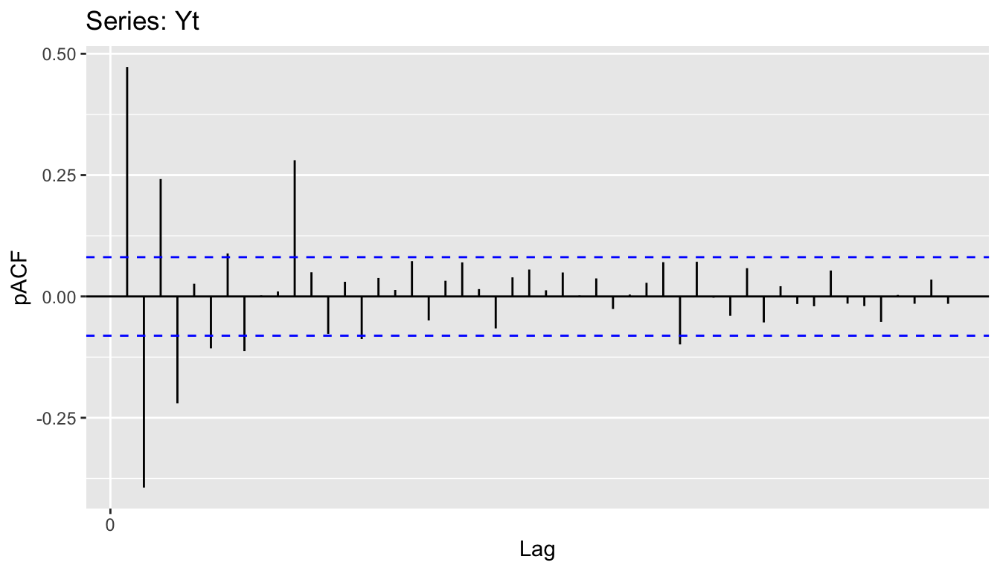
On décide alors d’ajuster sur la série \((X_t)_{t\in\Z}\) un modèle SARIMA(0,1,1)(0,1,1)[12]. L’estimation des paramètres est donnée ici à l’aide de la fonction arima() et on teste ensuite la blancheur des résidus avec la fonction Box.test() :
res<-arima(Xt,order=c(0,1,1),seasonal=list(order=c(0,1,1),period=12))
res
Call:
arima(x = Xt, order = c(0, 1, 1), seasonal = list(order = c(0, 1, 1), period = 12))
Coefficients:
ma1 sma1
0.8236 0.3584
s.e. 0.0220 0.0391
sigma^2 estimated as 0.9851: log likelihood = -829.86, aic = 1665.72Box.test(res$residuals)
Box-Pierce test
data: res$residuals
X-squared = 0.67745, df = 1, p-value = 0.4105Pour finir ce chapitre, on étude un jeu de données réelles concernant la pollution en oxyde d’azote à Londre.
Example 5.8 (Pollution en oxyde d’azote à Londron) La Figure 5.17 représente la mesure de pollution en oxyde d’azote à Londre par heure entre le 1/01/98 et le 21/01/98. On trace les autocorrélations empiriques (voir en Figure 5.18) et les autocorrélations partielles empiriques (voir en Figure 5.19) de cette série temporelle \((X_t)\).
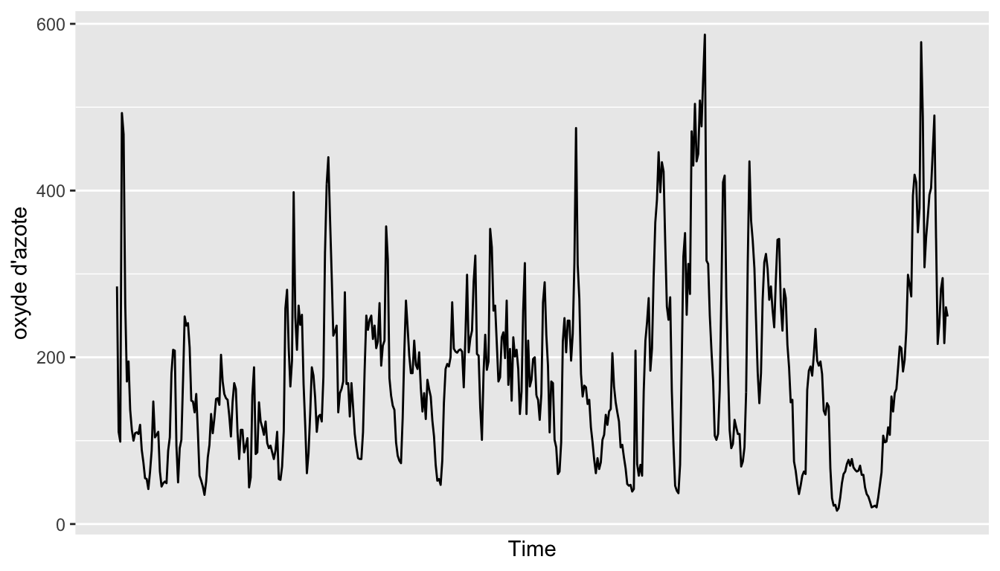
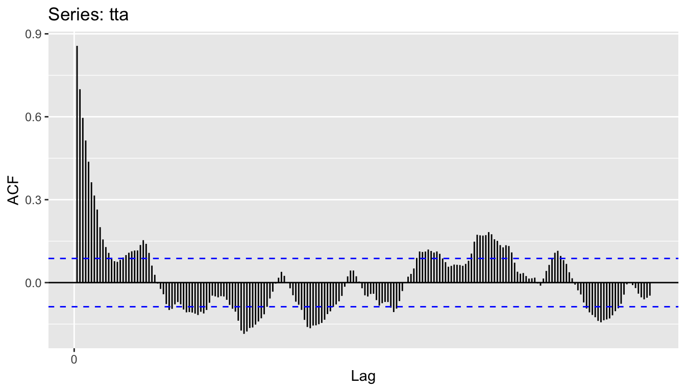
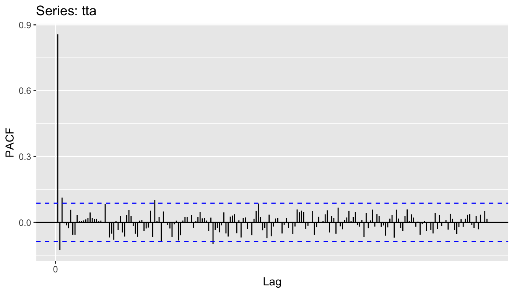
On analyse ensuite les autocorrélations et autocorrélations partielles empiriques de la série différenciée \(Y_t = (I-B^{24}) X_t\) (voir Figure 5.20). On peut alors considérer des modèles SARIMA avec \(0\leq q\leq 12\), \(0\leq p \leq 2\), \(0\leq Q \leq 2\), \(0\leq P \leq 1\).
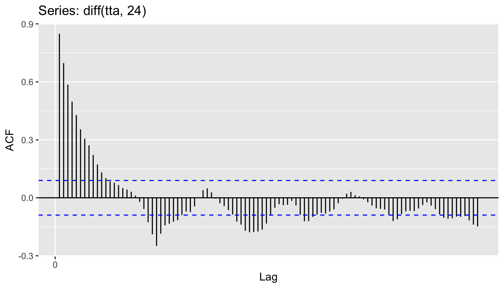
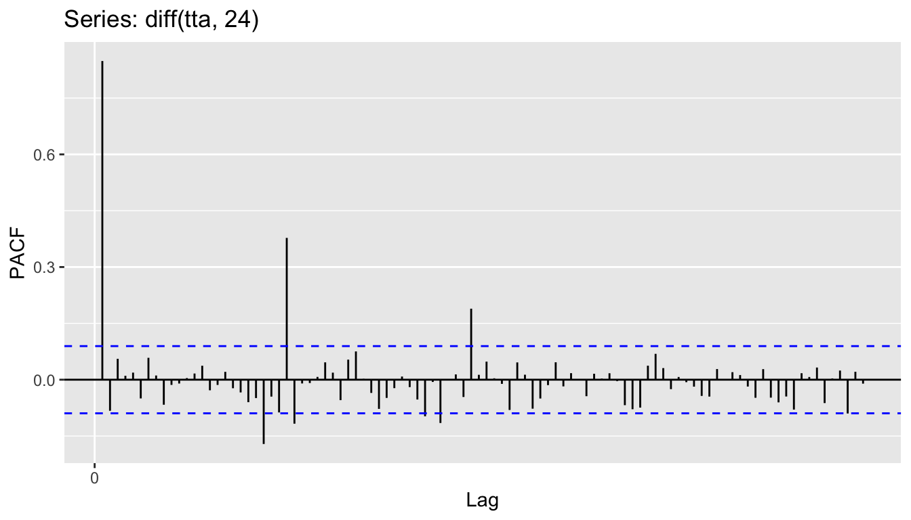
On met donc en place une sélection de modèles avec le critère AIC à l’aide de la fonction auto.arima(). On retient un modèle SARIMA\((0,1,1)(0,0,1)[24]\) et on contrôle la blancheur des résidus obtenus.
set.seed(1234)
res<-auto.arima(tta,ic=c("aic"),
max.p=2,max.q=12,
max.P=1,max.Q=2,seasonal=TRUE)
resSeries: tta
ARIMA(0,1,1)(0,0,1)[24] with drift
Coefficients:
ma1 sma1 drift
0.0784 0.1071 -0.1602
s.e. 0.0549 0.0463 3.0371
sigma^2 = 3305: log likelihood = -2750.34
AIC=5508.68 AICc=5508.76 BIC=5525.56Box.test(res$residuals)
Box-Pierce test
data: res$residuals
X-squared = 0.10787, df = 1, p-value = 0.7426On représente en Figure 5.21 la série temporelle ajustée par ce modèle par rapport à la série temporelle observée.
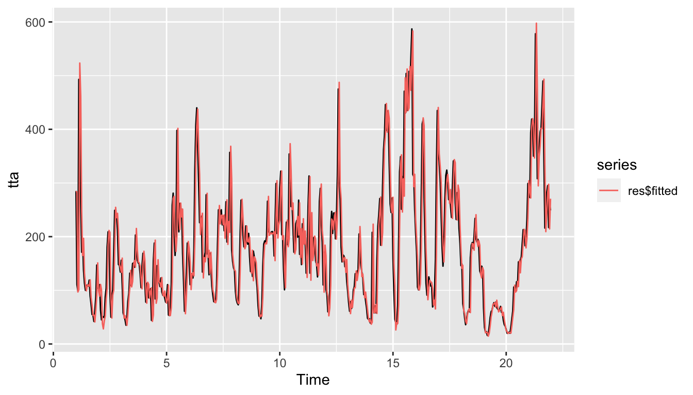
5.1.3.1 Comment déterminer l’inverse de \(\Phi(B)\) ?
Si l’inverse du polynôme \(\Phi(B)\) existe, on peut le déterminer par l’une de ces méthodes
Par exemple quand toutes les racines sont à l’extérieur du disque unité, on écrit \[ \left(1-\varphi_1z-\varphi_2z^2-\cdots-\varphi_pz^p\right) \left(\sum_{i\in\N}\psi_iz^i\right)=1 \] dont on tire des équations donnant les expressions des coefficients \(\psi_i\) en fonction des \(\varphi_i\).